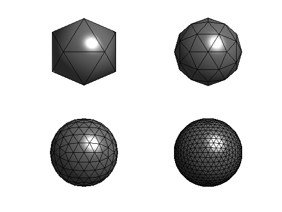
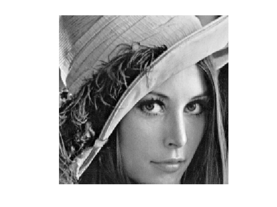
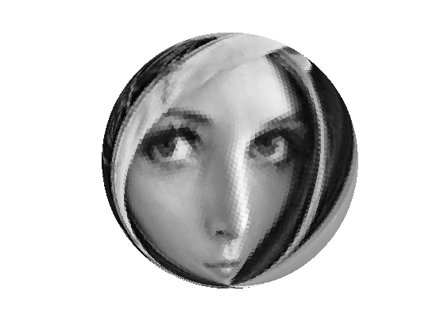
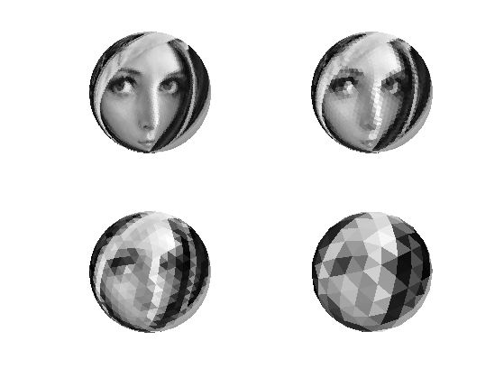
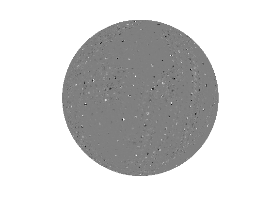
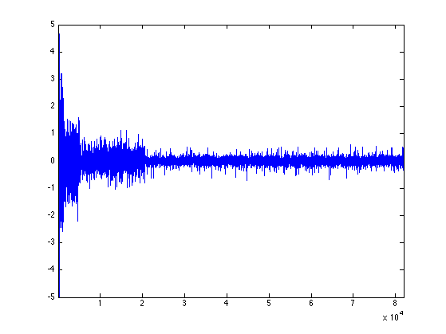
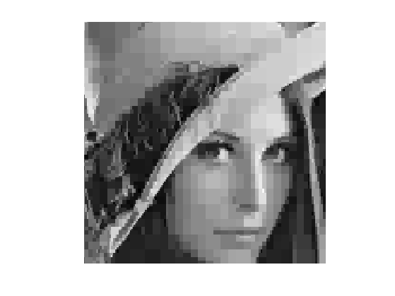

Spherical Haar Wavelets
This tour explores multiscale computation on a 3D multiresolution sphere using a face-based haar transform.
Contents
Installing toolboxes and setting up the path.
You need to download the following files: signal toolbox, general toolbox, graph toolbox and wavelet_meshes toolbox.
You need to unzip these toolboxes in your working directory, so that you have toolbox_signal, toolbox_general, toolbox_graph and toolbox_wavelet_meshes in your directory.
For Scilab user: you must replace the Matlab comment '%' by its Scilab counterpart '//'.
Recommandation: You should create a text file named for instance numericaltour.sce (in Scilab) or numericaltour.m (in Matlab) to write all the Scilab/Matlab command you want to execute. Then, simply run exec('numericaltour.sce'); (in Scilab) or numericaltour; (in Matlab) to run the commands.
Execute this line only if you are using Matlab.
getd = @(p)path(p,path); % scilab users must *not* execute this
Then you can add the toolboxes to the path.
getd('toolbox_signal/'); getd('toolbox_general/'); getd('toolbox_graph/'); getd('toolbox_wavelet_meshes/');
Functions Defined on Surfaces
One can define a function on a discrete 3D mesh that assigns a value to each vertex. One can then perform processing of the function according to the geometry of the surface. Here we use a simple sphere.
First compute a multiresolution sphere.
options.base_mesh = 'ico';
options.relaxation = 1;
options.keep_subdivision = 1;
J = 7;
[vertex,face] = compute_semiregular_sphere(J,options);
n = size(face{end},2);
Display two examples of sphere.
clf; for j=[1 2 3 4] subplot(2, 2, j); plot_mesh(vertex{j}, face{j}); shading faceted; end
Comput the center of each face.
x = []; for i=1:3 v = vertex{end}(i,:); x(i,:) = mean(v(face{end})); end
Load an image.
name = 'lena';
M = rescale( load_image(name, 512) );
Display it.
clf; imageplot(crop(M));
Load a function on the sphere. Use the center of each face to sample the function.
f = rescale( load_spherical_function(M, x, options) );
Display the function on the sphere.
vv = [125,-15];
options.face_vertex_color = f;
clf;
plot_mesh(vertex{end}, face{end}, options);
view(vv);
colormap gray(256);
lighting none;
Multiscale Low Pass
One can compute low pass approximation by iteratively averaging over 4 neighboring triangles.
Perform one low pass filtering.
f1 = mean( reshape(f, [length(f)/4 4]), 2);
Display.
clf;
options.face_vertex_color = f1;
plot_mesh(vertex{end-1}, face{end-1}, options);
view(vv);
lighting none;
 Exercice 1: (check the solution) Compute the successive low pass approximations.
exo1;
Spherical Haar Transform
One can compute a wavelet transform by extracting, at each scale, 3 orthogonal wavelet coefficient to represent the orthogonal complement between the successive resolutions.
Precompute the local wavelet matrix, which contains the local vector and three orthognal detail directions.
U = randn(4); U(:,1) = 1; [U,R] = qr(U);
Initialize the forward transform.
fw = f; nj = length(f);
Extract the low pass component and apply the matrix U
fj = fw(1:nj); fj = reshape(fj, [nj/4 4]); fj = fj*U;
Store back the coefficients.
fw(1:nj) = fj(:); nj = nj/4;
Exercice 2: (check the solution) Compute the full wavelet transform, and check for orthogonality (conservation of energy).
exo2;
Orthogonality deviation (should be 0): 5.5081e-15
Display the coefficients "in place".
clf;
options.face_vertex_color = clamp(fw,-2,2);
plot_mesh(vertex{end}, face{end}, options);
view(vv);
colormap gray(256);
lighting none;
 Display the decay of the coefficients.
clf; plot(fw); axis([1 n -5 5]);
Exercice 3: (check the solution) Implement the backward spherical Haar transform (replace U by U' to perform the reconstruction), and check for perfect reconstruction.
exo3;
clf;
options.face_vertex_color = clamp(f1);
plot_mesh(vertex{end}, face{end}, options);
view(vv);
colormap gray(256);
lighting none;
Bijectivity deviation (should be 0): 4.0915e-16
Exercice 4: (check the solution) Perform Haar wavelet approximation with only 10% of the coefficients.
exo4;
Exercice 5: (check the solution) Compare with the traditional 2D Haar approximation of M.
exo5;
Exercice 6: (check the solution) Implement Spherical denoising using the Haar transform. Compare it with vertex-based lifting scheme denoising.
exo6;